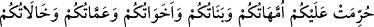

ettiklerini arzulayanlardır. Bunları kaybedecek olanlar ise onlara muhalefet
edenlerdir. Onlar arpa ekmeği yerler, yırtık elbise giyerler ve dünyâdan sâlimen
çıkarlar.”[242]
Mevlânâ Celâleddîn şöyle der:
Hakk’a perdeli olan henüz çocuk sayılır
Adam olmak için şek ve şüpheden soyulmalıdır.
Bahtiyar odur ki mücâhede eder nefsiyle
Halka ihsân ederken kavga eder kendisiyle
Nice işler vardır ki zordur başı ve evveli
Sonu kolaylaşır, giderek çetinliği
Bu yolda doğrulup yontulmak gerek
Tâ ki boş bir nefes kalmasın son nefese dek.
Ebû Ali Dekkâk (rh.a.) der ki: Mücâhede ile zâhirini süsleyenin Allah da müşâhede
ile bâtınını güzelleştirir. Allah Teâlâ şöyle buyurur: “Uğrumuzda mücâhede edenleri
elbette yollarımıza iletiriz.” (el-Ankebût, 29/69)
Sülûkün ilk zamanlarında (bidâyet) mücâhede sâhibi olmayan, bu yoldan bir koku bile
alamaz.
Ebü’l-Hasan Verrâk şöyle diyor: Ebû Osman mescidinde hâlimizin başlarında en
büyük prensibimiz bize “feth” olana kadar başkalarını kendimize tercîh etmek, rızık
konusunda herhangi bir hazırlık içinde bulunmamaktı. Bize kötü davrananlardan
kendimiz için intikam almaz, bilakis alçak gönüllülük göstererek kendilerinden özür
dilerdik. Herhangi birini kalben küçük gördüğümüz zaman bu duygu yok olana kadar
ona hizmet eder, iyilikte bulunurduk.
Ebû Hafs diyor ki: Kendi ayıplarını görmeyen bir kişi ne kadar çabuk helak olacaktır!
Çünkü masiyetler, küfrün habercisidir.
Ey âbid kişi, kalender-meşreb olanları ayıplama
Çünkü başkalarının günâhı sana yazılmaz korkma!
“Ben iyiyim, sen kötüsün” laflarını bırak, kendine bak!
Herkes ektiğini biçer doğrusu budur el-Hak.